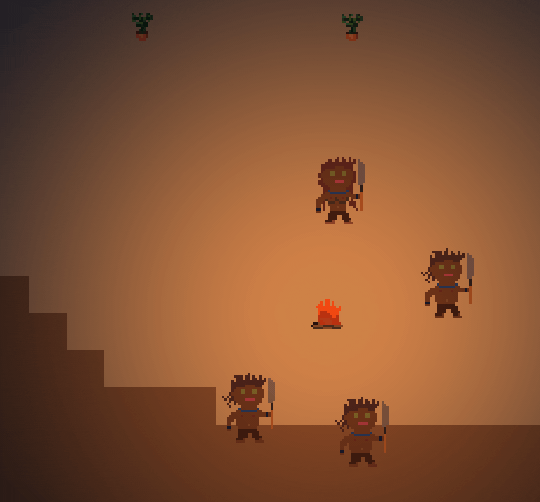

The last few weeks have been interesting. I tried to take the simulation to another level, creating new systems, making architectural changes to the code, etc. Today I'll go through some of them.
While simple combat was already implemented, it soon proved to be too simple, boring and "unrealistic". Predators now choose to hunt, and prey decides to flee or to fight back. Now, hominids can also be hunted, although most animals will avoid doing so until there are no more options.
Each creature now has Satiety, Stamina, and Health. Satiety drops as creatures get hungry. When they're too hungry, health gets drained. Stamina allows running/hunting/fleeing at greater speeds. An animal with higher stamina will likely be able to reach its prey in a hunt. Hominids also have Restlessness, which I view as the human drive to do stuff instead of staying quiet. Currently, it leads hominids to take strolls. I still want to better explore restlessness, and probably change it to a more advanced "mental state" thing.
There's now a day/night cycle. It gets dark. If a campfire wasn't built yet, hominids will prioritize building one. Right now, anyone can just build the campfire, as there's still no crafting system. This will change! This game is about primitive wilderness survival, so expect to have to forage for the things that will allow you to create other things. Having darkness in the game forced me to create a simple lighting system, which didn't exist yet.

Yes, there's some new "art". I have created some VERY CRUDE hominids in Aseprite. Also, some carrots, a bison, and a bear. My intent was not to create beautiful art yet, but to establish a basic art pipeline. For now, there's a simple sprite sheet, which is exported into an All.png file with everything I need. I did this early because in my last project I neglected art too much, leaving it for "later" and looking at ugliness every single day. I believe one of the reasons for my failure was splitting work too much. I spent too much time thinking about game design and code architecture, and too little on art. Now I'm looking for a more "cyclic" + balanced approach, where I work on all of these things, without leaving something abandoned for too long.
In the last post I mentioned the Drive/Task system. When a Drive score is calculated, it needs some information, which was being fetched for every Drive on every update. Adding a Perception layer fixed this. While perceiving things, a creature (hominid or other animal) collects information from its surroundings. This information is made available to the Drives. Another new "brain improvement" was adding a Memory structure. If an animal finds a spot where there's plenty of food, it'll store the location of that food, and will be able to return to that location even when venturing far away. Both changes really improved decision making.
There were also general improvements to rendering performance, collisions, pathfinding, etc. There's also a new proto-inventory system with item stacks, and a new fixed-timestep code (60 updates per second), hopefully bringing the game closer to determinism.
I also added very basic Lua modding support. Nothing fancy, it's just a Lua file with most of the game's magic numbers. It will likely evolve with time.
That's it, thanks for reading!